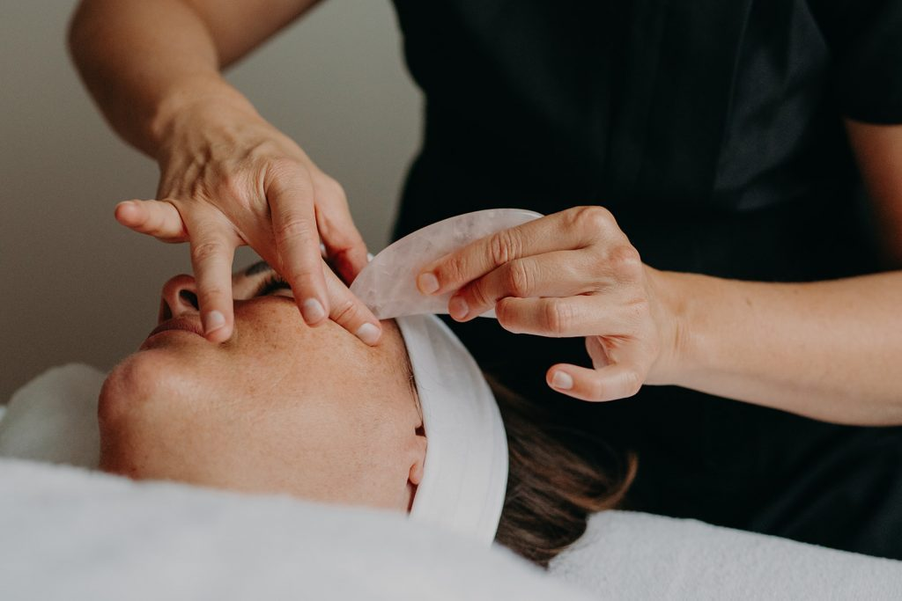
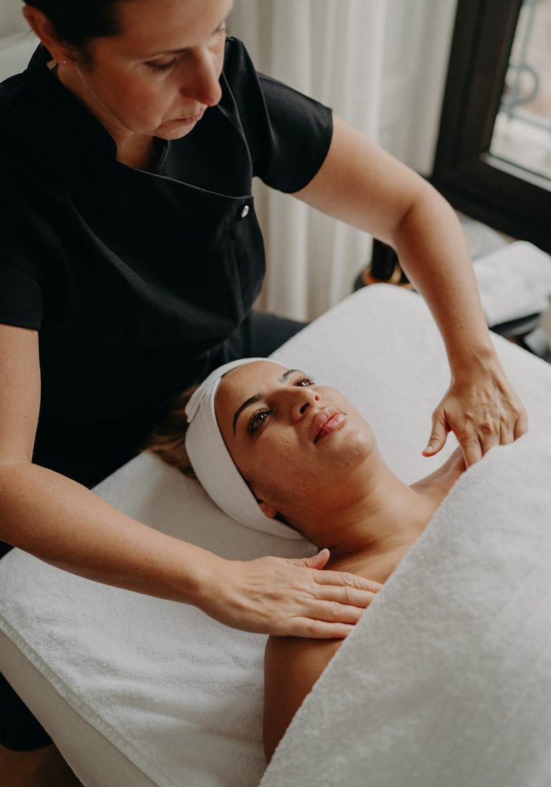

Le geste manuel, en complément du soin médical. Des massages japonais, drainants et naturels pour prolonger les résultats, détendre les traits et offrir un véritable moment pour soi.

Mireille, notre facialiste, vous accueille pour des soins du visage entièrement manuels, pensés comme un prolongement naturel de notre médecine esthétique. Loin des protocoles agressifs, elle travaille en douceur, à l'écoute de votre peau.
Ces rituels stimulent les tissus, relancent la circulation et procurent une détente profonde, pour un teint éclatant et des traits reposés.

Chaque soin est personnalisé selon votre type de peau et vos besoins du moment. Les techniques sont 100 % manuelles, sans appareil ni produit invasif.
La stimulation manuelle relance la microcirculation et ravive la bonne mine.
Le drainage lymphatique réduit les gonflements et affine les traits.
Un vrai moment pour soi, qui relâche les tensions du visage et de la nuque.
Le travail des muscles du visage tonifie et raffermit, séance après séance.
Réservez votre soin de facialiste et repartez le teint frais, les traits détendus.